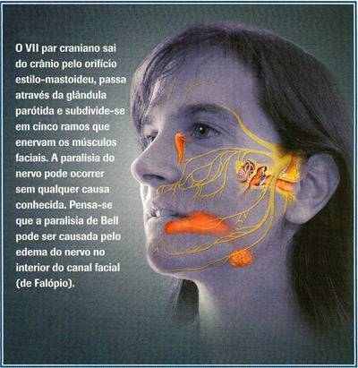

Paralisia total de todos, ou alguns, músculos da expressão facial.
A paralisia de Bell é uma paralisia facial unilateral, parcial ou completa, súbita, idiopática. A incidência desta ocorrência é de 25 por 100.000 indivíduos da população em geral. A taxa é mais baixa nas crianças e após a oitava década de vida. As crianças tendem a recuperar bem. Os doentes com diabetes têm uma probabilidade mais de quatro vezes superior de desenvolver uma paralisia de Bell em comparação com a população em geral. O último trimestre de gravidez é considerado como um período em que existe um risco acrescido de paralisia de Bell. As situações que comprometem o sistema imunitário, tais como a infecção pelo VIH ou a sarcoidose, aumentam a probabilidade de ocorrência ou de recorrência da paralisia facial. As infecções víricas e bacterianas, assim como as doenças auto-imunes, parecem constituir etiologias emergentes da paralisia de Bell.
A maior parte dos doentes refere ter acordado de manhã com uma paralisia de Bell ou com sintomas — tais como um olho seco ou parestesias em volta dos lábios — que progridem para uma paralisia de Bell clássica durante esse mesmo dia. Ocasionalmente, pode demorar alguns dias antes dos sintomas poderem ser atribuídos a uma paralisia de Bell. O grau de paralisia deve atingir o pico dentro de alguns dias após o seu início, mas esse período nunca é superior a duas semanas. Antes do desenvolvimento da paralisia pode ocorrer um sinal de alerta, como uma dor ao nível do pescoço, no ouvido ou na região retro-auricular, mas esta queixa geralmente não é reconhecida como um indicador da paralisia de Bell nos casos em que esta situação está a surgir pela primeira vez.
Os doentes que são observados pelo médico devido a uma paralisia facial devem igualmente efectuar uma avaliação da acuidade auditiva e do envolvimento de quaisquer outros nervos cranianos. Nos doentes com uma paralisia de Bell, a paralisia está limitada aos músculos faciais, indicando uma alteração no VII nervo craniano. Os doentes podem queixar-se de alterações do paladar e de um aumento da sensibilidade a ruídos intensos (hiperacúsia) — ambos relacionados com funções do VII nervo craniano.3 Os outros nervos cranianos devem estar normais no exame neurológico.
A paralisia facial pode progredir durante 1 a 2 dias ou pode ser máxima logo no início. A paralisia é completa em até 70% dos doentes. Alguns doentes queixam-se de vertigens e de otalgia ou de dor ao nível da apófise mastoideia. A maior parte dos doentes não refere sintomas parestésicos, embora alguns doentes se queixem de uma sensação de "adormecimento", que nem sempre é esclarecida através de testes. Mais tarde, alguns doentes referem um aumento do lacrimejo (lágrimas de crocodilo), enquanto que outros doentes podem ter uma diminuição do lacrimejo. As lágrimas de crocodilo — lacrimejo inapropriado habitualmente associado à ingestão de alimentos — têm sido atribuídas a uma regeneração aberrante ou a uma regeneração inadequada, na qual as fibras nervosas destinadas às glândulas submaxilares e sublinguais foram redireccionadas para enervar a glândula lacrimal através do nervo grande petroso.
O tempo de recuperação da função é variável. Esta pode ocorrer ao longo de duas semanas ou pode demorar meses até a recuperação estabilizar. Mais de mtade dos doentes recupera completamente. Pode ocorrer uma regeneração aberrante com o desenvolvimento de sincinésia em até 50% dos casos. Nos doentes com sincinésia, as tentativas para movimentar uma parte da face conduzem a movimentos ao nível de outros músculos faciais. O prognóstico para uma recuperação completa parece estar associado à presença duma paralisia parcial e a uma idade inferior a 40 anos.
- Paralisia Facial
06 November 2011